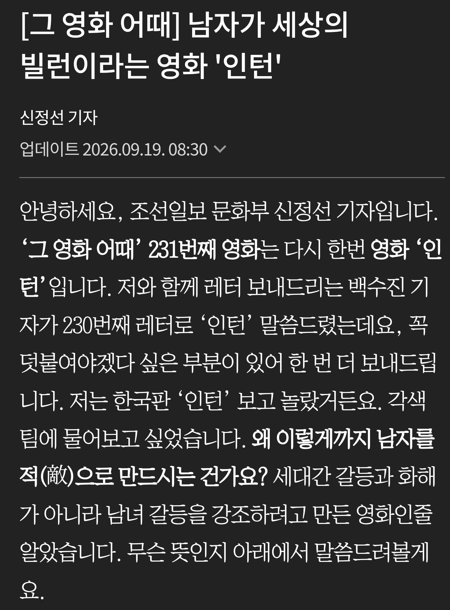

인턴 영화에 최민식 제외 남자는 빌런으로 다 구겨 놓음.
개연성을 해칠 정도로 남녀 갈등을 구겨 놓았음.
왜 이렇게 까지 했을까??
인턴 감독은 82년생 김지영 감독임.
https://www.chosun.com/culture-life/culture_general/2026/09/19/6CWHCFD6E5AT5M5V3CEHM2E4CM/
개봉 5일인데 주말 포함 누적 40만 턱걸이
아마 총 100만은 겨우 넘을까?

인턴 영화에 최민식 제외 남자는 빌런으로 다 구겨 놓음.
개연성을 해칠 정도로 남녀 갈등을 구겨 놓았음.
왜 이렇게 까지 했을까??
인턴 감독은 82년생 김지영 감독임.
https://www.chosun.com/culture-life/culture_general/2026/09/19/6CWHCFD6E5AT5M5V3CEHM2E4CM/
개봉 5일인데 주말 포함 누적 40만 턱걸이
아마 총 100만은 겨우 넘을까?
나도 보고 왔는데 감독이 재능이 없다고 생각한다 그냥 연출을 못함...
그 전 82년생은 어떨지 궁금하지도 않더라
나름 검증된 헐리우드 원작이랑 민식이형을 가지고 똥맛카레를 만들었다 이거군?
영혼보내기하면 백만 충분히 감
이걸 누가 돈주고봄 한달이면 ott뜰건데 ㅋ
병신좆지영
이거 그냥 ...그냥 감독이 재능이 없어. 다른게 아니라 진짜 재능이 없음